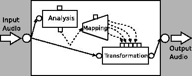

Next: Sample application Up: OOCTM and related Models Previous: Beyond Parametric Encoding: Content
A particular instance of the Object-Oriented Content Transmission Metamodel is that of Content-based Transformations (see [Amatriain et al., 2003]). As we will see, all the different components in the OOCTM can be involved in such a transformation. The only difference now is a shift in the final goal: instead of transmitting the original object, now we aim at changing it in meaningful ways.
As a matter of fact in a broad sense a content-based transformation only introduces a minor difference in the basic block diagram of the Object-Oriented Content transmission Metamodel introduced in figure 5.1. As illustrated in figure 5.17 the channel of the basic metamodel is now replaced by a Transformation Processing object. Nevertheless, throughout this section we will present different content-based transformation as particular instances of this metamodel.
When we use the term transformation, we use it in a different way from how we would use the word effect. When we talk about an effect, we are focusing on the result of changing the sound in a particular way. However, when talking about a transformation, the strength is put on the change that a particular sound undergoes, rather than on the result. Thus, not every sound can undergo a certain transformation, yet an effect can be applied on any source regardless its properties. That is the reason why we use the word transformation when addressing the content level.
Just as in the general OOCTM, in order to be able to apply some kind of content transformation the signal must undergo a previous analysis step. The goal of this step is to compute features that will then be relevant in the transformation step.
The first possible scenario is the one represented in figure 5.18. The output of the analysis is used as a side-chain control to the transformation block. The aim of this analysis is therefore not to extract meaning or identify objects but rather to simply extract some partial features that will be used as control. The transformation is then applied to the original sound directly. Note that, in this case, the user input is not used in the transformation chain so the scheme could be labeled as unsupervised. The parameters of the transformation are dynamically adapted to the characteristics of the input signal.
A very basic example of this kind of signal processor is an automatic gain control. Such a system can reduce or increase its gain depending on the relation between the input signal and a given threshold. When the signal exceeds that particular threshold the gain is reduced and the transformation is said to be a compressor (or a limiter if the slope is smaller than 1/10). On the other hand, if the signal is below the threshold, the gain is increased and the transformation is known as an expander. One may argue that this sort of signal analysis is too low-leveled to be included in the category of content-based transformation but we refer again to the definition of content previously introduced. The content description of the signal is being reduced to just a very simple feature: its level. In any event, it is clear that the transformation depends on the analysis of that particular feature applied to the incoming signal.
|

|
Most of the transformations implemented in the time-domain can fit quite well into any of the variations of the previous model. The implementation of the processing algorithms is quite straight forward and based on a sample-by-sample process. Examples of transformations that can be effectively implemented using these techniques include those related to effects like delays, chorus, reverbs, or dynamic processors
But sometimes the information that can be immediately gathered from the signal and its time-domain representation may not be enough in order to design a particular meaningful transformation. In such situations, the analysis step must yield more than just a set of features to be used as control signals. Thus, in order to achieve more interesting transformations we need to find a model for the signal in such a way that this intermediate representation is more suitable for applying some particular processes. Therefore, this analysis process is now analogous to the OOCTM semantic analysis step (see 5.2.1).
Figure 5.18 illustrates the new situation in which the signal is analyzed, transformed and then synthesized back (see [Serra and Bonada, 1998,Amatriain et al., 2001]). Note also that this block diagram is, as a matter of fact, the same as the one introduced in figure 5.17 but including the coder in the analysis object and the decoder in the synthesis object.
Sometimes, the analysis step may be skipped because the input stream already contains metadata that can be used for the transformation process. In this case we may not need to instantiate the transmitter side of the OOCTM because this process has been executed somewhere else or is available in the original data (remember that some higher-level such as the title of a piece may have been manually annotated). Figure 5.20 illustrates this situation.
An example of such a transformation would be, for instance, a genre-dependent equalization. By applying some of the existing genre taxonomies we could add metadata defining the genre of a given piece of music. The classification could be performed either manually or by using a combination of previously existing metadata that included, for example, author and title. The transformation block would then implement a basic filtering process that loads different filtering function templates depending on the genre.
Arguably, even another form of content transformation is that based on context awareness. By context awareness we mean the ability of a particular system of becoming aware of its surrounding world. In that sense, a dynamic processor whose threshold depends on the noise-level of the room would be an example of such a scheme, illustrated in figure 5.21.
Furthermore, context awareness is very much related to user profiling. A transformation system can respond differently according to the loaded user model. This user model can include information about user preferences as well as contextual information such as whether the user is happy or not [Chai and Vercoe, 2000].
But even in such a simple example as the one of the automatic gain control, the user input must somehow be taken into account (the threshold and the slope must somehow be set). In that sense, the previous scheme must be modified in order to include this new input. Figure 5.22 illustrates all possible inputs to the transformation chain.
A first version of the new scenario feeds this information directly into the analysis process so the user can control the settings of this particular step. The influence of the users actions is directly on the features extracted from the signal.
Furthermore, the user may be able to directly interact with the output of the analysis process and so change the characteristics of the sound features before using them as a control of the actual transformation. Now, the influence of the users actions is on the mapping function between the features extracted from the signal and the transformation control parameters. For example, we can take into account N features to control M parameters of the transformation, or more simply (using some sort of linear combination) take into account N features to control a single parameter of the transformation process. This way, the behavior that a given transformation will have on a particular sound is much more predictable and coherent to the characteristics of the sound itself. Yet another example of the interaction of the user in the transformation process is at the previously introduced stage of linear mapping between features and transformation control. Non-linearities, such as smoothing to avoid rapid transitions or truncation of the feature curve in order to select only the part of interest, may be introduced and directly controlled by the users input.
Obviously, the user input can be directly fed to the transformation block in order to change the parameters of the actual transformation process. The influence of the users action is now on the transformation controls (which will be generally different from those controlled by the extracted features). The following diagram illustrates the different possible user-inputs to the transformation thread.
But, as we already mentioned, when we talk about content processing, our focus is somehow shifted towards the final user of the system. The scenarios and examples of user input seen up until now suppose the user is still interacting with the transformation at a low-level. Thus, the user is seen more as an algorithm tweaking signal engineer than as a musician or artist.
But, in most cases, when we talk about content-based transformations, we imply that some sort of mapping between low-level parameters and higher-level ones is being performed. The aim of such a mapping is to group and relate features in such a way that they become meaningful for the targeted user. Still, the level of abstraction of the final controls has a lot to do with the profile of that targeted user. An expert user may require low-level, fine-tuning while a naive user will prefer high-level, easy to grasp parameters. It is interesting to note that this mapping is the inverse process to that of the multilevel analysis process illustrated in figure 5.7.
In the simplest case, the mapping between low and high-level parameters is done at the control level. The user input is processed and mapped to the low-level parameters affected by that particular control (see figure 5.23).
But this mapping can already be performed at the analysis stage. Thus, these higher-level features are analyzed and extracted from the sound in such a way that the user can interact with them in a meaningful way (see Figure 5.24).
It is clear that the choice of a good mapping strategy is absolutely necessary if we aim at providing a user-oriented content transformation. Many studies have focused on mapping human gestures to low-level synthesis parameters (see [Rovan et al., 1997,Schoner et al., 1998,Todoroff, 2002,Wanderley and Battier, 2000], for example). Our focus here may seem different (because we are not dealing with physical gestures) but it is not so. The intention of a sound designer or musician using a transformation from a high-level approach can in many ways be seen as a musical gesture. Indeed, it is also a so-called haptic function, that is a low-frequency (compared to the frequencies in the sound signal itself) change in the control values.
The main perceptual axes in a sound are (arguably): timbre, pitch, loudness, duration, position and quality. Ideally, we are looking for transformations that can change the sound in one of its dimensions without affecting any other or combining them in a meaningful way. In [Amatriain et al., 2003], we give several examples of content-based transformations applied to all of these axes as well as transformations addressing the musical and therefore high-level content of an audio signal.
2004-10-18